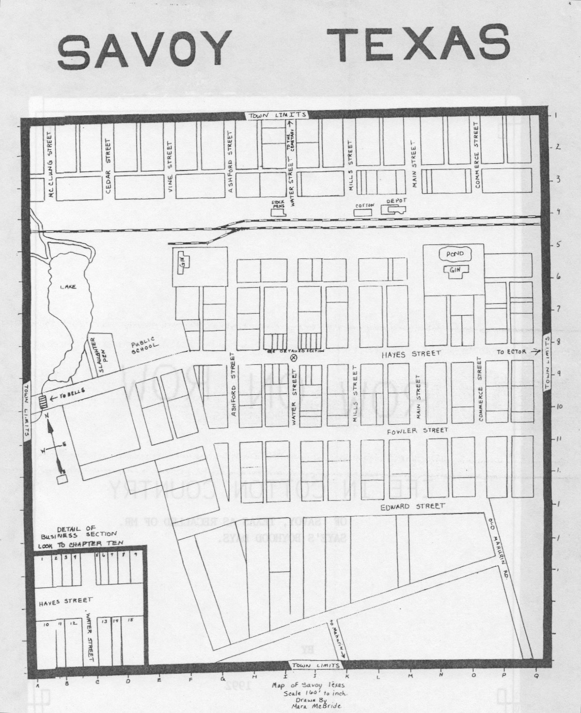
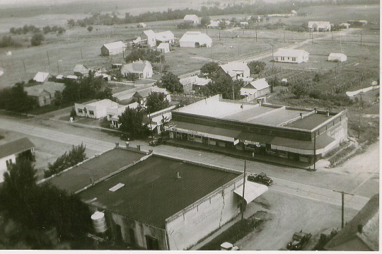
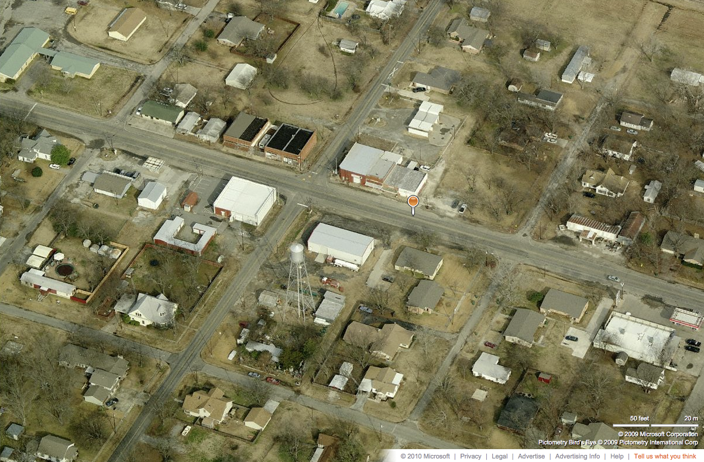

Cartography & Plats
Two historic maps survive in the archive — click any map to view full size.

A map documenting the path of the devastating 1880 cyclone that struck Savoy. This is one of the earliest cartographic records of the town and its surroundings, drawn in the immediate aftermath of the disaster to document its scope. The cyclone, covered by newspapers across Texas, left a lasting mark on the community.

A detailed plat map of Savoy, Texas showing the town's layout row by row — lots, blocks, and the street grid as it was recorded. This map provides a blueprint of the community's physical organization and serves as an essential reference for understanding the town's geography and property boundaries.
Aerial Views
Aerial photographs provide a bird's-eye perspective on Savoy's layout across different decades.

An aerial photograph of Savoy taken around 1940–1954, showing the town's street grid and building footprint at mid-century.

A contemporary bird's-eye view of Savoy, Texas, showing the present-day layout of the community in Fannin County.

A second contemporary aerial perspective of Savoy, providing a broader view of the surrounding countryside and road network.